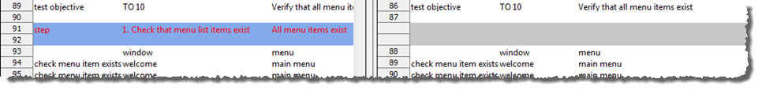

Using Diff Tool for project item comparisons
This topic describes the use of the Diff Tool to compare two project items, such as test modules or data sets, or revisions of a given project item.
At times, it can be helpful to compare the contents of two similar text-based project items. You may, for instance, have two revisions of a test module that were edited by different people, or two variations of an interface entity. Arranging the two items on screen side-by-side and doing an eyeball examination can help when the files are small and the differences few. But for anything more involved, trying to understand all the differences this way can be tedious and error-prone.
- The Diff Tool supports the comparing of project items not just within a project, but across projects and across repositories as well.
- For comparing pairs of test results, TestArchitect offers a different tool. See Comparing test results.
The user interface
- The diff toolbar, to allow you to control the nature of the comparison, navigate between found differences, and interface external tools; and
- Item panels, which provide side-by-side comparisons of the two compared items.
This screenshot displays a comparison of two test modules in the Diff Tool:
- Toolbar.
- Item
panels.
- Headers.
- Current location panels.
- Display panels.
The toolbar
The Diff Tool's tool bar contains six buttons:- Previous Difference:Selects the previous difference, relative to the currently selected line. Use this to step backwards (upwards) through differences between the files.Fastpath: F6.Note: This button is disabled when the currently selected line is at or above the first detected difference in the files.
- Next Difference:Selects the next difference, relative to the currently selected line. Use to step forwards (downwards) through differences between the files.Fastpath: F7.Note: This button is disabled when the currently selected line is at or below the first detected difference in the files.
- Refresh:Re-scans the items and updates the differences. Use after changes have been made to one or both items.Fastpath: F5.Warning:
- If changes are detected, the following warning dialog box appears.
- Yes: reload data without saving changes.
- No: abort the refresh.
- If the repository containing the item is disconnected, you will see the
following warning message dialog box.
- Yes: close the Diff Tool window.
- No: close the warning dialog box, and without reloading data.
- If changes are detected, the following warning dialog box appears.
- Case Sensitive:
- Disabled: (Default) Differences between lowercase and uppercase letters are ignored. For example, CarRental, CARRENTAL, carrental are all treated as identical text.
- Enabled: Comparisons take letter case into account. The text strings CarRental, CARRENTAL, carrental are all treated as different.
- Character Level:
- Disabled: (Default) Highlights differences at the word level.
- Enabled: Highlights character-by-character differences.
- Open External Merge Tool: The Diff Tool integrates with other applications that allow a third-party file comparison (diff) or file merging tool to be specified. (Learn more.)
The Item panels
- Header: The header at the top of each Item panel displays
the name of that item.
- The item's name is a hyperlink. Clicking this link opens the item in a TestArchitect editor window.
- Hover your mouse over the hyperlink to see a screentip for the item. The displayed
information includes the item's name, its TestArchitect
explorer path within the repository, and revision timestamp.
- Current location panel: Displays the currently selected line of the project item.
- Display panel: Displays the text content of the item. Lines that are
different from their counterparts (or have no counterparts) in the comparison file are
highlighted. (See highlighting details below.) This panel is also the main area for visualizing
and navigating the differences between the two items. Note: As you scroll an item up/down or left/right using its scroll bars, the comparison item is scrolled in sync with it, so that the two windows remain visually aligned. Also note that when you select a difference, it is always selected in both Item panels.
Difference highlighting
TestArchitect highlights differences between two items with colors. This section describes how each of the basic difference types is detected and displayed.
- Differences between lines:
- Whenever a difference is detected between corresponding lines of the two items, the
differing lines are highlighted in yellow.Note: One exception is item headers. If differences are detected between item headers, the original (blue) background color is preserved, and difference highlighting is limited to the word or character level. (Keep in mind that the headers refered to here are those within the respective project items, not the item panel headers within the Diff Tool window.)
- Within highlighted lines, exact differences are further highlighted by rendering the text
in red. At this level of difference highlighting, you can exercise one of two options, as
determined by the state of the toolbar's Character Level pushbutton:
- With button inactive (Default state): Differences are displayed at the word
level.
- With button in active state: Differences are displayed by character.
- Differences in whitespace and punctuation are also detected by the Diff
Tool:
- With button inactive (Default state): Differences are displayed at the word
level.
- Whenever a difference is detected between corresponding lines of the two items, the
differing lines are highlighted in yellow.
- Missing lines: Sometimes, lines existing in one project item do not exist in the
compared item. Lines in an item that are found to have no counterparts are highlighted in
blue, with all the text in red. In the compared item, the corresponding blank lines are
colored grey; if no such corresponding blank lines exist, they are automatically inserted, to
maintain visual correspondence.

- Header: Contains interface entity and interface entity setting action lines.
- Missing: Contains action lines present in only one of the two interface entities.
- Differences: Contains action lines that the tool has determined to be corresponding lines (due to similarities), but which nevertheless have differences, which are highlighted.
- Identicalness: Contains fully matching action lines.
Working with multiple Diff Tool windows
A unique Diff Tool window is launched every time you invoke the Diff Tool. Hence, it is possible to have multiple Diff Tool windows open concurrently, each displaying a separate comparison.
Share Via...